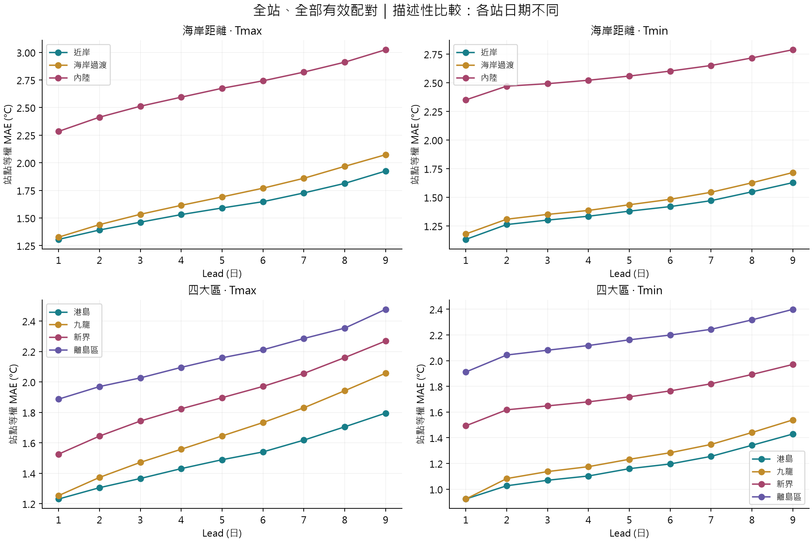

全站氣溫地方代表性：海岸距離與四大區
2022–2025 · D1–D9 · 全部 30 個合資格 AWS · 港島／九龍／新界／離島 · 排除 TMS、TC
沒有抽三站。全部有效配對共 670,865 筆。全部站、Tmax／Tmin、所有 lead 的共同日期只剩 24 日。全部資料模式保留每站全部有效日，但日期不同；嚴格共同模式日期一致，但不足以支持四年間穩定地區排名。
完整研究報告（GitHub Markdown） · 全部逐站分數 CSV · 全部組別分數 CSV · 37 站資格與缺值 · 數值核對
所有站點的分組與誤差
地圖各點可按；這只是在查看站點，不會改變分析站群。灰色點沒有納入目前模式。離島以行政離島區為準，含長洲、昂坪、坪洲、橫瀾島。
全部站群
D3 全部有效資料

如何解讀
- MAE／RMSE 小表示共同預報值更貼近該樣本實測；Bias = 預報−觀測，正值為偏高。
- 組別指標給每站同等權重；RMSE 是平均每站 MSE 後開根號。不是先平均實測，也不是讓資料多的站權重更大。
- 「全站全部有效資料」各站日期不同，屬描述性比較；bootstrap 區間不能消除缺值造成的時間構成差異。
- 共同24日分布：2022年4日、2023年3日、2024年4日、2025年13日，不能充分代表四年。
- 主分析保留昂坪593m；29站低海拔模式排除昂坪。離島組的分數不能直接歸因於離島位置。
- 已另外量度各站與HKO實測的地域差：觀測差分布、逐lead誤差分解。尚未建立或驗證地方化修正預報。
- 這不是ARWF各站專屬預報能力排名，也沒有估計地理因素的因果影響。